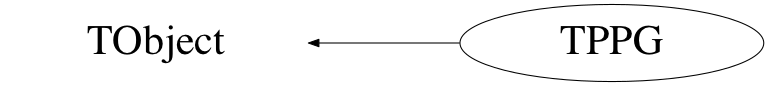

class TPPG: public TObject
Function Members (Methods)
public:
| TPPG() | |
| TPPG(const TPPG&) | |
| virtual | ~TPPG() |
| void | TObject::AbstractMethod(const char* method) const |
| void | Add(const TPPG* ppg) |
| void | AddData(TPPGData* pat) |
| virtual void | TObject::AppendPad(Option_t* option = "") |
| virtual void | TObject::Browse(TBrowser* b) |
| static TClass* | Class() |
| virtual const char* | TObject::ClassName() const |
| virtual void | Clear(Option_t* opt = "") |
| virtual TObject* | TObject::Clone(const char* newname = "") const |
| virtual Int_t | TObject::Compare(const TObject* obj) const |
| virtual void | Copy(TObject& rhs) const |
| bool | Correct(bool verbose = false) |
| virtual void | TObject::Delete(Option_t* option = "")MENU |
| virtual Int_t | TObject::DistancetoPrimitive(Int_t px, Int_t py) |
| virtual void | TObject::Draw(Option_t* option = "") |
| virtual void | TObject::DrawClass() constMENU |
| virtual TObject* | TObject::DrawClone(Option_t* option = "") constMENU |
| virtual void | TObject::Dump() constMENU |
| virtual void | TObject::Error(const char* method, const char* msgfmt) const |
| virtual void | TObject::Execute(const char* method, const char* params, Int_t* error = 0) |
| virtual void | TObject::Execute(TMethod* method, TObjArray* params, Int_t* error = 0) |
| virtual void | TObject::ExecuteEvent(Int_t event, Int_t px, Int_t py) |
| virtual void | TObject::Fatal(const char* method, const char* msgfmt) const |
| virtual TObject* | TObject::FindObject(const char* name) const |
| virtual TObject* | TObject::FindObject(const TObject* obj) const |
| const TPPGData* | First() |
| ULong64_t | GetCycleLength() |
| ULong64_t | GetCycleNumber(ULong64_t real_time) |
| virtual Option_t* | TObject::GetDrawOption() const |
| static Long_t | TObject::GetDtorOnly() |
| virtual const char* | TObject::GetIconName() const |
| ULong64_t | GetLastStatusTime(ULong64_t time, TPPG::ppg_pattern pat = kJunk, bool exact_flag = false) const |
| virtual const char* | TObject::GetName() const |
| ULong64_t | GetNumberOfCycles() |
| virtual char* | TObject::GetObjectInfo(Int_t px, Int_t py) const |
| static Bool_t | TObject::GetObjectStat() |
| virtual Option_t* | TObject::GetOption() const |
| uint16_t | GetStatus(ULong64_t time) const |
| ULong64_t | GetStatusStart(TPPG::ppg_pattern) |
| ULong64_t | GetTimeInCycle(ULong64_t real_time) |
| virtual const char* | TObject::GetTitle() const |
| virtual UInt_t | TObject::GetUniqueID() const |
| virtual Bool_t | TObject::HandleTimer(TTimer* timer) |
| virtual ULong_t | TObject::Hash() const |
| virtual void | TObject::Info(const char* method, const char* msgfmt) const |
| virtual Bool_t | TObject::InheritsFrom(const char* classname) const |
| virtual Bool_t | TObject::InheritsFrom(const TClass* cl) const |
| virtual void | TObject::Inspect() constMENU |
| void | TObject::InvertBit(UInt_t f) |
| virtual TClass* | IsA() const |
| virtual Bool_t | TObject::IsEqual(const TObject* obj) const |
| virtual Bool_t | TObject::IsFolder() const |
| Bool_t | TObject::IsOnHeap() const |
| virtual Bool_t | TObject::IsSortable() const |
| Bool_t | TObject::IsZombie() const |
| const TPPGData* | Last() |
| virtual void | TObject::ls(Option_t* option = "") const |
| Bool_t | MapIsEmpty() const |
| void | TObject::MayNotUse(const char* method) const |
| Long64_t | Merge(TCollection* list) |
| const TPPGData* | Next() |
| virtual Bool_t | TObject::Notify() |
| void | TObject::Obsolete(const char* method, const char* asOfVers, const char* removedFromVers) const |
| static void | TObject::operator delete(void* ptr) |
| static void | TObject::operator delete(void* ptr, void* vp) |
| static void | TObject::operator delete[](void* ptr) |
| static void | TObject::operator delete[](void* ptr, void* vp) |
| void* | TObject::operator new(size_t sz) |
| void* | TObject::operator new(size_t sz, void* vp) |
| void* | TObject::operator new[](size_t sz) |
| void* | TObject::operator new[](size_t sz, void* vp) |
| void | operator+=(const TPPG& rhs) |
| TPPG& | operator=(const TPPG&) |
| virtual void | TObject::Paint(Option_t* option = "") |
| virtual void | TObject::Pop() |
| size_t | PPGSize() const |
| const TPPGData* | Previous() |
| virtual void | Print(Option_t* opt = "") const |
| virtual Int_t | TObject::Read(const char* name) |
| virtual void | TObject::RecursiveRemove(TObject* obj) |
| void | TObject::ResetBit(UInt_t f) |
| virtual void | TObject::SaveAs(const char* filename = "", Option_t* option = "") constMENU |
| virtual void | TObject::SavePrimitive(ostream& out, Option_t* option = "") |
| void | TObject::SetBit(UInt_t f) |
| void | TObject::SetBit(UInt_t f, Bool_t set) |
| void | SetCycleLength(ULong64_t length) |
| virtual void | TObject::SetDrawOption(Option_t* option = "")MENU |
| static void | TObject::SetDtorOnly(void* obj) |
| static void | TObject::SetObjectStat(Bool_t stat) |
| virtual void | TObject::SetUniqueID(UInt_t uid) |
| virtual void | ShowMembers(TMemberInspector&) |
| virtual void | Streamer(TBuffer&) |
| void | StreamerNVirtual(TBuffer& ClassDef_StreamerNVirtual_b) |
| virtual void | TObject::SysError(const char* method, const char* msgfmt) const |
| Bool_t | TObject::TestBit(UInt_t f) const |
| Int_t | TObject::TestBits(UInt_t f) const |
| virtual void | TObject::UseCurrentStyle() |
| virtual void | TObject::Warning(const char* method, const char* msgfmt) const |
| virtual Int_t | TObject::Write(const char* name = 0, Int_t option = 0, Int_t bufsize = 0) |
| virtual Int_t | TObject::Write(const char* name = 0, Int_t option = 0, Int_t bufsize = 0) const |
protected:
| virtual void | TObject::DoError(int level, const char* location, const char* fmt, va_list va) const |
| void | TObject::MakeZombie() |
Data Members
public:
| enum ppg_pattern { | kBeamOn | |
| kDecay | ||
| kTapeMove | ||
| kBackground | ||
| kSync | ||
| kJunk | ||
| }; | ||
| enum TObject::EStatusBits { | kCanDelete | |
| kMustCleanup | ||
| kObjInCanvas | ||
| kIsReferenced | ||
| kHasUUID | ||
| kCannotPick | ||
| kNoContextMenu | ||
| kInvalidObject | ||
| }; | ||
| enum TObject::[unnamed] { | kIsOnHeap | |
| kNotDeleted | ||
| kZombie | ||
| kBitMask | ||
| kSingleKey | ||
| kOverwrite | ||
| kWriteDelete | ||
| }; |
private:
| map<unsigned long,TPPGData*,less<unsigned long>,allocator<pair<const unsigned long,TPPGData*> > >::iterator | fCurrIterator | ! |
| ULong64_t | fCycleLength | |
| map<ULong64_t,int> | fNumberOfCycleLengths | |
| map<unsigned long,TPPGData*,less<unsigned long>,allocator<pair<const unsigned long,TPPGData*> > >* | fPPGStatusMap |
Class Charts



Function documentation
TPPG()
~TPPG()
Bool_t MapIsEmpty() const
Checks to see if the ppg map is empty. We need this because we need to put a default PPG in at time T=0 to prevent bad things from happening. This function says the map is empty when only the default is there, which it essentially is.
void AddData(TPPGData* pat)
Adds a PPG status word at a given time in the current run. Makes a copy of the pointer to store in the map.
ULong64_t GetLastStatusTime(ULong64_t time, TPPG::ppg_pattern pat = kJunk, bool exact_flag = false) const
Gets the last time that a status was given. If the ppg_pattern kJunk is passed, the current status at the time "time" is looked for. If exact_flag is false, the bits of "pat" are looked for and ignore the rest of the bits in the sotred statuses. If "exact_flag" is true, the entire ppg pattern "pat" must be met.
bool Correct(bool verbose = false)
Correct the map of PPG events by checking that we always have a PPG event with the same status that occured fCycleLength ago.
ULong64_t GetTimeInCycle(ULong64_t real_time)
ULong64_t GetCycleNumber(ULong64_t real_time)
Long64_t Merge(TCollection* list)
void operator+=(const TPPG& rhs)